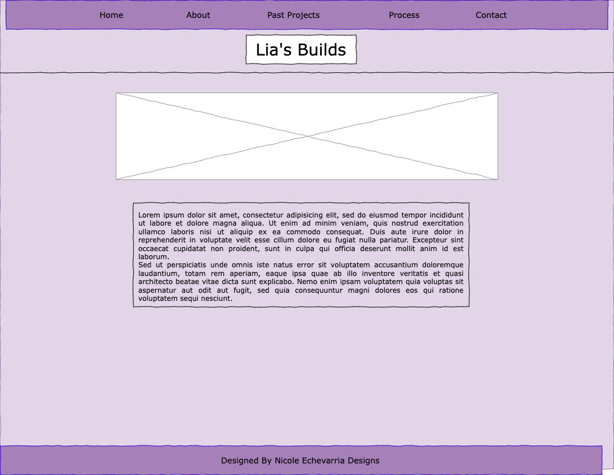
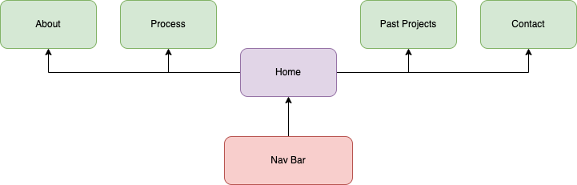

Client Project - Design & Requirements
Client Information:
- Aurelia Medina
- Email Address: aurnaymed134340@gmail.com
- Phone Number: [private]
Project Overview:
- A webiste offering Minecraft Building services.
- Intended Users: Anyone in the Minecraft community wanting a beautiful build to spice up their world.
- The website will consist of 5 tabs, one about the service, one about the client, one showing the process, one showcasing past builds and the last for contact
Wireframe:
 Lia's Builds Draw.ioWireframe:
 Lia's Builds Sitemap Draw.ioPage Design
- Home: The page will have a bit of background and advertising as why you should want someone to build for you. Its purpose is to introduce the idea of minecraft builders to the viewer. There will be a few pictures and paragraphs.
- About: This page will talk about why Lia wants to offer this service, and about Lia herself. The purpose is to offer a bit of background to the whole project. It will also have a simple picture.
- Process: The process and inspiration of building is something the viewer might be interested in. Therefore this page will show the how Lia gets the inspiration and may inspire those getting the service to ask for what they envision. This page will have an accordion for each step of the process.
- Past Projects: This tab will show all of Lia's past builds over the years. It offers some examples and can even be requested to be made again. This tab will have a slideshow showing all the pictures.
- Contact: This page will simply have a form for the viewer to fill out and contact Lia for the service.